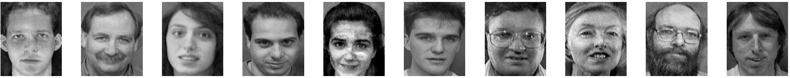

Deep Learning & Computer Vision
从浅层到深度的表征学习
Representation Learning: From Handcrafted to Deep
第 3 讲
2026 春季学期
第 3 讲 · 从浅层到深度的表征学习 02
Overview
本讲关注：表征 如何被获得和评价？
视觉系统的核心不是分类器，而是把像素变成“好用的表征”。
手工设计特征：SIFT、HOG 及其局限
浅层特征学习：PCA、稀疏编码、中层模式挖掘
深度表征：CNN 内部学到了什么
降低标注依赖：先迁移已有知识，再利用未标注数据
自监督方法：对比学习、掩码建模与自回归 SimCLR MAE
第 3 讲 · 导览 03
Learning Outcomes
学完这讲，你应该能判断一种表征是否好用
解释手工特征、监督表征、迁移学习和自监督学习的差别
根据任务判断哪些变化应该保持不变，哪些变化必须保留
为一个视觉任务选择合理的数据增广，并说明选择依据
解释对比学习为什么需要防止表征坍塌
在线性探针之外，选择检索、微调、密集迁移或跨域测试来评价表征
“表征好”不是脱离任务的结论。学生需要说清楚：它保留了什么信息、忽略了什么变化、在哪个任务和评估协议下有效 。
01
手工特征时代
在深度学习之前，人们怎样把图像变成可比较的数字？
第 3 讲 · 手工特征时代 04
SIFT：尺度不变特征变换
(a) 关键点 → 梯度方向直方图描述子
(b) 基于 SIFT 的跨视角图像匹配
图源：Lowe, IJCV 2004
第 3 讲 · 手工特征时代 05
HOG：方向梯度直方图
用局部梯度方向直方图描述形状
直觉：不关心“边缘在哪”，只统计“边缘朝哪个方向”，得到形状的粗略素描
经典组合：HOG + SVM ——手工特征 + 浅层分类器
行人检测的里程碑工作（Dalal & Triggs, 2005）
行人相对刚性，适合用模板表达
记住：HOG + SVM 是深度学习之前视觉任务的标准范式——人工设计特征，机器学习只负责最后的分类器。
图源：Dalal & Triggs, CVPR 2005
第 3 讲 · 手工特征时代 06
HOG + SVM 行人检测
典型范式：浅层特征 + 浅层分类器
检测流程：滑动窗口扫描 → 每个窗口提取 HOG → SVM 打分
在 EPFL / PETS2009 数据集上效果良好
但模板固定，难以应对复杂变化
注意：这类方法的“智能”几乎全在人工设计的特征里，分类器本身很浅——特征一旦失效，整体就失效。
第 3 讲 · 手工特征时代 07
手工特征不够鲁棒
开放世界中，手工设计的特征难以应对各种变化：
遮挡（occlusion）
光照变化（bad lighting）
外观与姿态变化（appearance / pose variation）
视角与尺度变化（viewpoint / scale variation）
注意：手工特征的“不变性”来自人工假设 （如 SIFT 假设尺度 / 旋转不变）；开放世界中假设一旦不成立，特征就失效。
与其人工“设计”特征，学习 表征。
—— 表征学习的出发点
第 3 讲 · 手工特征时代 09
本章小结：手工特征时代
01
SIFT
关键点 + 梯度方向直方图描述子，尺度 / 旋转不变，擅长图像匹配。尺度不变 、描述子
02
HOG + SVM
方向梯度直方图刻画形状，配 SVM 做行人检测，是“手工特征 + 浅层分类器”的经典范式。模板 、滑动窗口
03
共同局限
不变性靠人工假设，在遮挡、光照、姿态、视角、尺度剧变的开放世界中不够鲁棒 → 特征应当从数据中学 。
02
什么是好的表征
表征应该保留什么、忽略什么，怎样证明它有用？
第 3 讲 · 什么是好的表征 11
LeCun 的蛋糕：自监督才是主体
纯强化学习 = 樱桃：偶尔的几个比特奖励
监督学习 = 糖霜：每样本 10~10,000 比特
无监督 / 预测学习 = 蛋糕主体 ：每样本数百万比特
“比特”指标签携带的信息量——人工标签的信息远远少于数据本身
智能的大部分来自对世界的预测式学习
记住：监督信号的信息量排序为 强化学习 ≪ 监督学习 ≪ 自监督 / 预测学习——这是自监督兴起的根本动机。
图源：Yann LeCun, NeurIPS 2016 Keynote
第 3 讲 · 什么是好的表征 12
好的表征应具备哪些性质？
紧凑 （compact / minimal）：去除冗余，用更少维度表达同样的信息充分 （explanatory / sufficient）：保留解释数据的关键因素解耦 （disentangled）：独立因子（如姿态、光照）彼此分离，各管各的可解释 （interpretable）：人能理解每个维度大致代表什么让后续任务更容易 解决——这是最实用的一条标准
记住：判断表征好坏的终极标准是“下游任务是否变容易” （Bengio, Courville & Vincent, IEEE TPAMI 2013）。
第 3 讲 · 什么是好的表征 13
不变性与等变性：要保留什么，取决于任务
输入变化 分类任务希望 定位 / 几何任务希望
物体在图像中平移 近似不变 ：仍判断为同一类别等变 ：预测位置应随之移动水平翻转 多数自然物体分类可保持类别 文字、交通方向和左右解剖结构可能改变语义 颜色改变 形状主导的类别可适度忽略 细粒度识别、病理和材料检测可能必须保留 裁剪或遮挡 可容忍非关键区域缺失 过强裁剪会删除目标或几何关系
好的表征不是对所有变化都不敏感，而是对与任务无关的变化保持稳定 ，对任务需要的变化保留可预测响应。
依据：Bengio, Courville & Vincent, IEEE TPAMI 2013；SimCLR, ICML 2020
第 3 讲 · 什么是好的表征 13
如何评估一种表征学习方法？
不关心代理任务本身做得多好——在下游任务（少量标注）上评估学到的特征提取器
注意：评估的不是代理任务精度（比如旋转预测准不准），而是学到的编码器在下游任务 上的表现。
第 3 讲 · 什么是好的表征 14
生物视觉的层级表征
视觉皮层逐级抽象：V1/V2 → V4 → PIT/AIT
从边缘、纹理到部件、完整物体
深度网络的层级设计正是受此启发（如 HMAX 类皮层模型）
图源：Serre et al., IEEE TPAMI 2007（教程版式：Serre, 2014）
第 3 讲 · 什么是好的表征 15
本章小结：什么是好的表征
01
评价与任务相关
紧凑、充分等性质可作参考；应对无关变化保持不变 ，对位置等任务变量保持等变 。
02
看下游能力
不看代理任务精度，而要检查表征能否让分类、检索、密集预测等实际下游任务 变容易。
03
两点启示
LeCun 蛋糕：自监督的信息量远大于监督；生物视觉的层级抽象 启发了深度网络设计。
03
浅层特征学习
不使用深网络，能否从数据中自动发现特征？
第 3 讲 · 浅层特征学习 17
PCA：学习一组本征基向量
寻找数据方差最大的一组正交基（本征表示）
直觉：给高维数据找“主轴”，沿主轴方向数据变化最剧烈、信息量最大
以重建 / 压缩 为目标的线性降维
第一个本征脸对应最大方差方向，依次递减
数据驱动，但只是线性、浅层的变换
注意：PCA 是线性 方法，只看二阶统计量（方差）；人脸角度、表情等非线性变化它表达不了。
图源：Turk & Pentland, J. Cognitive Neuroscience 1991
第 3 讲 · 浅层特征学习 18
PCA 人脸重建
(a) 原始训练图像

(b) PCA 重建图像——与原图几乎一致
第 3 讲 · 浅层特征学习 19
稀疏表示：字典上的稀疏组合
测试样本 = 训练字典的稀疏线性组合 + 稀疏误差
求解 L1 最小化：min ‖x‖₁，s.t. Ax = y
直观理解：用尽可能少的训练样本拼出测试样本，因此大部分系数为零
遮挡 / 噪声被建模为稀疏误差项，因此对它们很鲁棒
记住：稀疏表示把遮挡当成稀疏误差 显式建模，这是它在遮挡人脸识别上鲁棒的根本原因。
图源：Wright et al., IEEE TPAMI 2009
第 3 讲 · 浅层特征学习 20
经典目标识别流水线
手工特征提取器 → BoW 中层模型（Segments / Parts）→ 分类器
第 3 讲 · 浅层特征学习 21
多示例学习（MIL）
标注以“包”为单位：正包 至少含一个正实例
负包 中所有实例都是负例类比：一袋糖果里只要有一颗是草莓味，整袋就标为“草莓包”
适合弱标注：图像级标签 → 挖掘区域级概念
第 3 讲 · 浅层特征学习 22
挖掘有判别力的中层视觉模式
用多示例学习从图像块中挖掘判别性模式（G-code）
聚类 + 空间金字塔，汇聚成整图表征
MIT Indoor 67 场景分类准确率 50.15%，当时最优
Wang et al., MMDL, ICML 2013
记住：浅层学习的上限在于——特征可以学，但层层之间的组合方式仍是人工搭建 的。
图源：Wang et al., ICML 2013
第 3 讲 · 浅层特征学习 23
本章小结：浅层特征学习
01
PCA / 本征脸
以重建为目标的线性 降维：找方差最大的正交基。局限：无法表达非线性结构。
02
稀疏表示
测试样本 = 字典的稀疏组合 + 稀疏误差；L1 最小化求解；对遮挡 / 噪声 鲁棒。
03
中层模式挖掘
多示例学习（MIL）从弱标注中挖掘判别性图像块模式，聚类 + 空间金字塔汇聚成整图表征。
04
历史定位
特征开始“学”了，但流水线仍靠人工串联——为端到端深度学习 埋下伏笔。
04
深度表征学习
多层网络内部究竟学到了哪些视觉模式？
第 3 讲 · 深度表征学习 25
深度学习：一切模块皆可学习
不再手工设计任何模块
边缘 / 纹理 / 部件 / 分类器全部从数据中学
整个流水线端到端联合优化
记住：端到端 = 特征提取与分类器不再分开设计，而由同一个损失函数联合优化——误差信号一路反传到最底层。
第 3 讲 · 深度表征学习 26
CNN 第一层学到什么？
第一层自发学到类 Gabor 的边缘与颜色滤波器
Gabor 滤波器是手工时代的经典边缘检测器——CNN 自己“重新发明”了它
可视化方法：寻找使某滤波器响应最强的图像块
与手工特征时代的边缘检测器惊人相似
图源：Zeiler & Fergus, ECCV 2014
第 3 讲 · 深度表征学习 27
CNN 逐层抽象：从纹理到物体
(a) Layer 2：纹理与简单图案
(b) Layer 4：物体部件（狗脸、钟表）
(c) Layer 5：完整物体与场景
图源：Zeiler & Fergus, ECCV 2014
第 3 讲 · 深度表征学习 28
CNN “学会”了经典识别流水线
网络内部自发形成 边缘 → 纹理 → 部件 → 物体 的层级表征
第 3 讲 · 深度表征学习 29
本章小结：深度表征学习
01
端到端学习
所有模块可学习，同一损失联合优化——手工流水线被整体取代。end-to-end
02
CNN 内部表征
可视化显示：网络自发形成 边缘 → 纹理 → 部件 → 物体 的层级结构 ，与生物视觉和经典流水线对应。
03
代价
强监督学到好表征，但依赖海量人工标注 ——引出后续的迁移 / 半监督 / 自监督。
强监督深度学习可以学到好的表征，海量人工标注 。
—— 接下来的问题：如何减少对标签的依赖？
05
迁移学习
为什么在别的数据上学到的参数可以帮助新任务？
第 3 讲 · 迁移学习 32
预训练 → 微调 → 测试
微调（finetuning）：从旧任务学到的表征出发，用少量数据适配新任务
第 3 讲 · 迁移学习 33
微调实践：迁移的是“权重”
“好的表征让后续的学习任务更容易。”—— Goodfellow et al.,《Deep Learning》, 2016
“学到的表征”具体就是网络的权重与偏置
保留骨干网络，替换最后的分类头
新任务只需少量标注即可达到好效果
记住：微调的本质是迁移权重 ——骨干冻结或小学习率更新，只把新分类头训练好。
第 3 讲 · 迁移学习 34
监督学习的代价：标签从哪来？
监督学习 = 图像 X + 人工标签 Y
每一个标签背后都是人工标注的成本
标注昂贵、规模受限——能否利用海量无标注数据？
注意：标注成本随任务精细度急剧上升——图像级分类 ≪ 检测框 ≪ 像素级分割 / 关键点。
第 3 讲 · 迁移学习 35
异构网络之间的知识迁移
知识不仅跨任务迁移，还能跨网络结构 迁移
在深度 / 宽度 / 卷积核三个级别做参数重映射
架构适配总成本较 DPC 降低约三个数量级
Fang et al., FNA++, IEEE TPAMI 2021
图源：Fang et al., IEEE TPAMI 2021
第 3 讲 · 迁移学习 36
本章小结：迁移学习
01
预训练 → 微调
大数据集上预训练，小数据集上微调：迁移的是权重 ，保留骨干、替换分类头。
02
为什么有效
好表征让后续任务更容易；新任务只需少量标注 即可适配。
03
跨结构迁移
知识还能跨网络结构迁移（如 FNA++ 的参数重映射），但预训练仍依赖人工标注 。
06
半监督学习
标签很少时，怎样利用大量未标注图像？
第 3 讲 · 半监督学习 38
半监督学习：伪标签
设定：少量标注数据 + 大量无标注数据
用当前模型为无标注数据生成伪标签
在“标注 + 伪标注”数据上重新训练，迭代提升
注意：伪标签会把模型的错误自我强化 （确认偏差，confirmation bias）——实践中必须用置信度阈值过滤低质量伪标签。
第 3 讲 · 半监督学习 39
FixMatch：弱增广出标签，强增广学一致
弱增广图像的预测超过阈值 → 转化为 one-hot 伪标签
强增广图像的预测与伪标签计算交叉熵
核心：同一语义的不同视图应有一致预测
Sohn et al., NeurIPS 2020
记住：FixMatch 的分工——弱增广 负责产出可信伪标签，强增广 负责学习“扰动下预测不变”。
图源：Sohn et al., NeurIPS 2020
第 3 讲 · 半监督学习 40
Mean Teacher：师生一致性
学生网络正常梯度训练
教师网络 = 学生参数的指数滑动平均 （EMA）
θ′t = αθ′t−1 + (1−α)θt ，α 接近 1（如 0.99），教师变化缓慢
直观理解：教师是学生参数的长期平均，因此提供的学习目标更稳定
Tarvainen & Valpola, NeurIPS 2017
记住：一致性正则的核心假设——对输入做小扰动（增广 / 噪声 / 不同模型），预测结果不应改变 。
图源：Tarvainen & Valpola, NeurIPS 2017
第 3 讲 · 半监督学习 41
本章小结：半监督学习
01
伪标签
模型自己给无标注数据“造”标签再自训；陷阱是确认偏差 ，需置信度阈值。
02
FixMatch
弱增广出标签、强增广学一致 ，把伪标签与一致性正则统一到一个框架。
03
Mean Teacher
教师 = 学生参数的 EMA ，目标更稳定；一致性假设贯穿所有半监督方法。
07
无监督 / 自监督学习
没有人工标签，监督信号还能从哪里来？
第 3 讲 · 自监督学习 43
自监督：标签来自数据本身
把“无监督”问题转化为“监督”形式的经验风险最小化
预测目标（伪标签）直接从原始数据中构造
无需任何人工标注
记住：自监督 = 监督信号从数据自身构造 ，用监督学习的方法消化无标注数据。
第 3 讲 · 自监督学习 44
自编码器：最经典的无监督表征学习
编码器把输入压缩为瓶颈向量 z，解码器重建输入；z 即学到的表征（Hinton & Salakhutdinov, Science 2006）
记住：自编码器的直觉是“压缩即理解” ——能从瓶颈 z 重建原图，说明 z 保留了关键信息。
图源：Hinton & Salakhutdinov, Science 2006
第 3 讲 · 自监督学习 45
自监督学习的两阶段范式
阶段一：无标注数据上训练代理任务；阶段二：少量标签微调到下游任务
记住：自监督学习 = 预训练（代理任务）+ 迁移（下游微调） 两阶段，与监督预训练的使用方式完全一致。
第 3 讲 · 自监督学习 46
如何度量表征质量：线性探针
Linear probe：冻结编码器 fθ (·)，只训练一个线性分类器。
最简单、最常用的表征评估协议（FC 层或线性 SVM）
常用数据集：ImageNet、Places205、Pascal VOC07、COCO、iNat
也可以整体微调，比较下游任务（检测、分割）性能
注意：线性探针前必须冻结编码器 ；它衡量的是表征的“线性可分性”，探针差不代表表征一无是处（可能信息非线性编码）。
第 3 讲 · 自监督学习 47
线性探针之外，还要怎样评估表征？
评估方式 模型参数如何使用 主要回答的问题
线性探针 冻结编码器，只训练线性层 类别信息是否容易被线性读出 k-NN / 图像检索 直接比较冻结特征的邻近关系 表征空间是否把语义相近样本放在一起 少样本与微调 使用少量标签，部分或全部更新参数 表征能否高效适应新任务 检测 / 分割 / 深度迁移 接入任务头并在密集任务上训练 是否保留局部结构、边界与几何信息 跨域与鲁棒性测试 更换数据来源、扰动或子群 能力是否只对原数据分布有效
单一协议只观察表征的一部分性质。公平比较还要统一骨干网络、数据规模、输入分辨率、训练预算和微调配方。
依据：SimCLR, ICML 2020；DINO, ICCV 2021；WILDS, ICML 2021
第 3 讲 · 自监督学习 48
代理任务示例：图像上色
输入灰度图（L 通道），预测颜色信息（ab 通道）
颜色是“免费”的监督信号
网络被迫理解物体与场景结构
Zhang, Isola & Efros, ECCV 2016
记住：好的代理任务强迫网络理解语义 （“草是绿的、天是蓝的”需要认出物体），而非记忆低层统计。
图源：Zhang, Isola & Efros, ECCV 2016
第 3 讲 · 自监督学习 49
代理任务示例：旋转预测
随机旋转 0° / 90° / 180° / 270°，预测旋转角度
判断“哪边朝上”需要理解物体朝向与结构
简单却有效的代理任务
Gidaris et al., ICLR 2018
图源：Gidaris et al., ICLR 2018
第 3 讲 · 自监督学习 50
本章小结：无监督 / 自监督学习总览
01
核心思想
标签来自数据本身：把无监督问题转化为监督形式，无需人工标注 。
02
自编码器
压缩—重建的经典路线；瓶颈向量 z 即表征（“压缩即理解”）。
03
评估协议
线性探针只衡量线性可分性；还需结合检索、少样本微调、密集迁移与跨域测试 观察不同能力。
04
代理任务
三种信号来源：数据压缩、标签预测、数据预测；代表：上色、旋转预测。
08
自监督学习：对比学习
怎样构造“相似样本”，又怎样避免所有特征变得一样？
第 3 讲 · 对比学习 52
生成式 vs 对比式
生成式在输出（像素）空间计算损失；对比式在表征空间区分“相似 / 不相似”
记住：对比学习只关心表征空间里谁和谁像 ，不做像素级重建——因此更省算力、更聚焦高层语义。
第 3 讲 · 对比学习 53
对比学习的目标
score(f(x), f(x+ )) ≫ score(f(x), f(x− ))
# x+ 正样本：与 x 相似（如同一图像的不同增广视图）
# x− 负样本：与 x 不相似的其他样本
# score：相似度度量，常用向量内积
score(f(x), f(x+ )) = f(x)T f(x+ )
直观理解：同一图像的两个增广视图在特征空间靠近 ，不同图像的特征远离 ；内积越大越相似。
第 3 讲 · 对比学习 54
数据增广定义不变性，训练目标必须防止坍塌
正样本不是天然存在的
同一图像的两种增广被规定为“语义相同”
裁剪、颜色抖动等选择直接决定模型忽略哪些变化
若增广删掉任务关键信息，学到的不变性会伤害下游任务
为什么会表征坍塌？
若所有输入都映射到同一个向量，正样本当然完全一致
但这种表示不再区分任何样本，无法用于下游任务
对比学习用负样本排斥坍塌；BYOL、DINO 依靠非对称网络、动量教师和输出正则等设计
自监督目标不仅要让两个视图一致，还要保证不同输入保留足够差异；增广假设与防坍塌机制 共同决定表征质量。
依据：SimCLR, ICML 2020；BYOL, NeurIPS 2020；DINO, ICCV 2021
第 3 讲 · 对比学习 56
Class Exercise
同一种数据增广，对不同任务可能有相反作用
任务 可以考虑的增广 需要谨慎的增广 原因
普通物体分类 适度裁剪、缩放、颜色抖动 裁掉主体的大幅裁剪 类别通常不随位置和轻微颜色变化 道路文字识别 轻微透视、亮度和模糊 水平翻转、过强裁剪 翻转会改变字符，裁剪会删除文字 医学影像左右病灶 符合采集过程的噪声和强度变化 未核对语义的左右翻转 左右位置可能直接影响诊断含义 目标检测 / 分割 同步变换图像与框或掩码 只变图像、不更新标注 几何变换必须保持标签对齐
请为自己的研究任务写出一种“安全增广”和一种“危险增广”，并说明它们分别保留或破坏了什么任务信息 。
第 3 讲 · 对比学习 54
SimCLR：简单的对比学习框架
同一图像两种增广 → 共享编码器 f(·) + 投影头 g(·)
最大化两个视图表征的一致性（对比损失）
训练完成后丢弃投影头，用 h 做下游任务
线性评估首次逼近监督 ResNet-50（Chen et al., ICML 2020）
注意：投影头 g(·) 只在训练时存在，下游任务用编码器输出 h，不用 g 的输出 ——这是新手最常搞混的一点。
图源：Chen et al., ICML 2020
第 3 讲 · 对比学习 55
MoCo：动量对比
把对比学习看作“查字典”：query 匹配 key
动量编码器 + 队列 ：维护大量一致的负样本摆脱对超大 batch size 的依赖
He et al., CVPR 2020
记住：MoCo 的两大件——队列 （存历史 key 当负样本）+ 动量编码器 （慢速更新，保证 key 的一致性），让小 batch 也能做对比学习。
图源：He et al., CVPR 2020
第 3 讲 · 对比学习 56
DINO：无标签自蒸馏
学生网络匹配教师（EMA）网络的输出分布
无需负样本，也没有显式的对比项
ViT 的自注意力图自动涌现 物体分割能力
Caron et al., ICCV 2021
注意：没有负样本时模型容易“坍塌”（所有输入输出相同）；DINO 用教师输出的中心化 + 锐化 避免坍塌。
图源：Caron et al., ICCV 2021
第 3 讲 · 对比学习 57
DINOv2 → DINOv3：自监督视觉基础模型
自蒸馏路线被一路放大到“基础模型”规模，冻结骨干即可当通用特征提取器。
DINOv2 （Oquab et al., TMLR 2024）：1.42 亿张精选图像上预训练；分类 / 分割 / 深度估计 / 检索等任务上，冻结特征 即有很强的迁移表现DINOv3 （Siméoni et al., 2025.8）：约 17 亿图像、ViT-7B 规模；提出 Gram anchoring ，防止长训练下稠密（patch 级）特征退化首次有冻结的自监督骨干 在多项稠密任务上超过专门设计的方案
记住：DINOv2 / DINOv3 标志着自监督表征与基础模型合流——训练一次，各处免微调 取用特征。
第 3 讲 · 对比学习 58
CLIP：对比式语言-图像预训练
4 亿图文对对比预训练；用文本编码器把类别名变成分类器，实现 zero-shot 识别（Radford et al., 2021）
记住：CLIP 把“分类器权重”换成类别名的文本编码 ——换类别只需改一句话，因此能 zero-shot 识别任意新类别。
图源：Radford et al., ICML 2021
第 3 讲 · 对比学习 59
SigLIP 系列与 MLLM 的视觉编码器
SigLIP （Zhai et al., ICCV 2023）：用 sigmoid 逐对损失 替代 CLIP 的 softmax 对比损失——不需全局归一化，训练更简单高效SigLIP 2 （Tschannen et al., 2025）：多语言 + 更好的语义理解、定位与稠密特征，成为众多 MLLM 的默认视觉骨干多模态大模型（LLaVA 等）把 CLIP / SigLIP / DINOv2 的冻结视觉特征 经连接器直接接入 LLM
Cambrian-1（Tong et al., NeurIPS 2024）以视觉为中心系统比较：编码器选择与连接器设计显著影响 MLLM 性能
记住：大模型时代，视觉表征学习的产出常常不直接做任务，而是作为 MLLM 的“眼睛” 被复用。
第 3 讲 · 对比学习 60
本章小结：对比学习
01
增广与坍塌
正样本增广规定模型应忽略哪些变化；训练目标还要防止所有输入映射到同一向量的表征坍塌 。
02
SimCLR / MoCo
SimCLR：大 batch 提供负样本，投影头训练后即弃；MoCo：队列 + 动量编码器 摆脱大 batch。
03
DINO → DINOv2 / v3
无负样本的自蒸馏；近两年放大为基础模型规模，冻结骨干 即通用视觉特征。
04
CLIP → SigLIP 2
图文对比实现 zero-shot ；sigmoid 损失更高效；视觉编码器成为 MLLM 的“眼睛”。
09
自监督学习：掩码建模与自回归
遮住一部分或预测下一部分，为什么能学到表征？
第 3 讲 · 掩码建模与自回归 62
掩码建模的起点：BERT
随机遮蔽部分词（[MASK]），让模型预测原词
双向 Transformer 编码器
“遮蔽—预测”成为自监督预训练的通用范式
Devlin et al., NAACL 2019
记住：“遮蔽—预测 ”（mask-and-predict）从 BERT 开始成为自监督预训练的通用范式，后被迁移到视觉。
图源：Devlin et al., NAACL-HLT 2019
第 3 讲 · 掩码建模与自回归 63
MAE：掩码自编码器
随机遮蔽 75% 图像块，编码器只处理可见块
轻量解码器 + 掩码 token 重建被遮蔽的像素
非对称结构大幅降低预训练计算量
可扩展：ViT-Huge 上依然有效（He et al., CVPR 2022）
注意：为什么图像能遮 75% 而 BERT 只遮 15%？图像的空间冗余远高于语言——遮少了等于“抄近路”，学不到语义。
图源：He et al., CVPR 2022
第 3 讲 · 掩码建模 65
Research Case · HUST-VL
EVA：遮住图像块，但预测的是语义特征
训练目标来自冻结的图文对齐视觉编码器：EVA 只看未遮挡 patch，预测被遮挡位置对应的语义视觉特征，而不是 RGB 像素。
与 MAE 对比着讲：输入遮挡方式相似，关键差别在监督目标。像素重建重视外观细节；语义特征预测更直接强调跨任务可迁移的信息。
Fang et al., EVA, CVPR 2023 Highlight · arxiv.org/abs/2211.07636
第 3 讲 · 掩码建模与自回归 64
MAE 的重建效果
遮蔽 80% 图像块后仍能重建出语义合理的内容（每组：遮蔽输入 / 重建 / 原图）
图源：He et al., CVPR 2022
第 3 讲 · 掩码建模与自回归 65
自回归 / GPT 式预训练
p(x) = ∏i p(xi | x1 , …, xi−1 ; θ)
# GPT-1 (2018)：Transformer 解码器做语言建模，逐词预测
# Image GPT (2020)：图像像素按光栅顺序排成序列，
# 逐像素自回归预测（也可用 BERT 式掩码目标）
# 与掩码建模互补的另一条生成式路线
直观理解：自回归就是“根据前文预测下一个” ；图像像素排成序列后，也能逐像素采用同样的预测方式。
第 3 讲 · 掩码建模与自回归 66
更多自监督路线
(a) Barlow Twins：互相关矩阵逼近单位阵（ICML 2021）
(b) data2vec：跨模态的教师-学生掩码建模
(c) iBOT：在线 tokenizer 的掩码图像建模
图源：Zbontar et al., ICML 2021；Baevski et al., ICML 2022；Zhou et al., ICLR 2022
第 3 讲 · 掩码建模与自回归 67
JEPA：在表征空间 做预测
核心思想：不重建像素，用 context 的表征去预测 target 的表征 （联合嵌入预测架构）
直观理解：预测“含义”而不是逐像素复原，因此可以忽略不可预测的低层细节
I-JEPA （Assran et al., CVPR 2023）：图像块之间的表征预测，几乎不依赖手工增广V-JEPA （Bardes et al., TMLR 2024）：视频上的特征预测；V-JEPA 2 （Assran et al., 2025）：大规模视频预训练 + 动作条件后训练，可零样本规划机器人操作
记住：JEPA 是 LeCun“世界模型”蓝图的落地路线——在表征空间预测世界，与生成式（像素重建）互补。
第 3 讲 · 掩码建模与自回归 68
本章小结：掩码建模与自回归
01
BERT
随机遮蔽词再预测 + 双向 Transformer，确立“遮蔽—预测 ”范式（NLP）。
02
MAE
遮 75% 图像块，编码器只处理可见块 + 轻量解码器重建——非对称结构 大幅省算力、可扩展。
03
自回归 / GPT 式
p(x) = ∏ p(xi | x<i )：逐元素预测；GPT-1 与 Image GPT 把该路线带入预训练。
04
更多路线与 JEPA
Barlow Twins、data2vec、iBOT；JEPA 系列 （I-JEPA / V-JEPA）在表征空间预测，通往世界模型。
10
拓展：隐式神经表示
网络参数能否直接表示一张图像或一个三维场景？
第 3 讲 · 隐式神经表示 70
INR：用网络参数化连续信号
隐式神经表示（INR）：fθ (x) → y，把坐标映射为属性，由网络权重参数化。
输入坐标：图像 (x, y)、视频 (x, y, t)、3D 位置 + 视角
输出属性：颜色 (r, g, b)、密度 σ 等
优势：分辨率无关、连续可微、表示紧凑
局限：复杂场景下表达能力有限
记住：INR 把“数据”编码进网络权重 ——坐标进、属性出，天然与分辨率无关。
第 3 讲 · 隐式神经表示 71
代表工作：NeRF 神经辐射场
5D 输入（空间位置 + 视角方向）→ 颜色 + 密度；体渲染 + 渲染损失端到端优化（Mildenhall et al., ECCV 2020）
图源：Mildenhall et al., ECCV 2020
第 3 讲 · 隐式神经表示 72
2023 以来的新范式
从 NeRF 到 3D Gaussian Splatting
3DGS （Kerbl et al., SIGGRAPH 2023）：用显式的 3D 高斯点云 替代隐式 MLP，每个高斯带位置 / 协方差 / 颜色 / 不透明度渲染改用光栅化 而非逐射线体渲染：从分钟级到实时（百帧级）
表征观：从“权重即数据”回到“显式基元 + 可学习参数 ”
两三年间衍生庞大生态：动态 4D 高斯、压缩、编辑、SLAM、生成式重建
注意：隐式（NeRF）与显式（3DGS）不是取代关系——前者紧凑连续，后者快且易编辑，是表达能力与效率的权衡 。
第 3 讲 · 三维表征 74
Research Case · HUST-VL
4D Gaussian Splatting：共享一套高斯，只预测随时间发生的形变
一套 canonical 3D Gaussians 表示场景基准状态；4D 神经体素编码空间与时间，轻量 MLP 预测位置、旋转和尺度的变化，再用高斯光栅化渲染。
沿图回答：哪些参数跨时间共享？哪些量随时间变化？如果每一帧都独立保存一套高斯，会失去什么？
Wu et al., 4D Gaussian Splatting, CVPR 2024 · github.com/hustvl/4DGaussians
第 3 讲 · 三维表征 75
Research Case · 4D Gaussian Splatting
方法是否有用，要同时看画质和渲染速度
动态场景中的人物和物体会随时间变化，模型需要在新视角下同时恢复空间结构与运动。论文在 800×800、RTX 3090 上报告 82 FPS。
课堂追问：PSNR 更高但只能离线渲染，和画质略低但达到实时，哪一个更好？答案取决于自由视点视频、编辑、机器人感知等具体使用场景。
官方项目结果图：Wu et al., CVPR 2024
第 3 讲 · 隐式神经表示 73
INR 的应用与影响
图像 / 视频 / 音频压缩：COIN++、NeRV——权重即数据
任意分辨率超分：LIIF / UltraSR
光场表示：SIGNET
生成模型：把数据看作连续函数的分布
视角转换：网络权重本身就是一种表征
第 3 讲 · 课堂实践 77
Minimum Viable Experiment
三讲之后，完成一个最小但完整的视觉实验
需要提交什么 最低要求 检查重点
问题定义 写清输入、输出、数据单位和主要指标 任务与指标是否匹配 数据划分 固定训练、验证、测试集；说明划分单位 是否存在同主体、近重复或时间泄漏 可复现基线 训练一个简单 CNN，或微调一个公开预训练模型 记录随机种子、配置和最好验证轮次 一次对照实验 只改变一种增广、预训练方式或冻结策略 除目标因素外，其余条件尽量一致 结果与失败分析 报告测试指标，并检查至少 20 个失败样例 错误是否集中在特定类别、场景或数据来源
目标不是刷出最高分，而是让别人能够复现实验，并看懂模型在哪些条件下有效、哪些条件下会失败 。
第 3 讲 · 从浅层到深度的表征学习 74
关掉课件，你能判断一种表征是否好用吗？
SIFT、PCA 和深度网络得到的特征分别由谁决定？它们各自依赖什么假设？
为什么分类表征希望对平移近似不变，而检测表征要对位置变化作出响应？
迁移学习、半监督学习和自监督学习分别利用了什么已有信息？
对比学习中的正样本是怎样定义的？不合适的数据增广会删除什么信息？
所有输入映射到同一个向量时，损失为什么可能很低，表征却完全没用？
为什么线性探针不能单独证明一种表征适合检测、分割或跨域部署？
选择你自己的研究任务，用三句话回答：希望表征保留什么、忽略什么、准备怎样验证 。说不具体的地方，就是下一步需要补的知识。
第 3 讲 · 参考文献 75
参考文献（1/3）：经典特征 · 浅层与深度表征 · 弱监督
Distinctive Image Features from Scale-Invariant Keypoints . Lowe. IJCV 2004. Histograms of Oriented Gradients for Human Detection . Dalal & Triggs. CVPR 2005. Eigenfaces for Recognition . Turk & Pentland. Journal of Cognitive Neuroscience 1991. Robust Face Recognition via Sparse Representation . Wright, Yang, Ganesh, Sastry, Ma. IEEE TPAMI 2009. Max-Margin Multiple-Instance Dictionary Learning . Wang, Wang, Bai, Liu, Tu. ICML 2013. Representation Learning: A Review and New Perspectives . Bengio, Courville, Vincent. IEEE TPAMI 2013. Robust Object Recognition with Cortex-Like Mechanisms . Serre, Wolf, Bileschi, Riesenhuber, Poggio. IEEE TPAMI 2007. Visualizing and Understanding Convolutional Networks . Zeiler & Fergus. ECCV 2014. Deep Learning . Goodfellow, Bengio, Courville. MIT Press 2016. FNA++: Fast Network Adaptation via Parameter Remapping and Architecture Search . Fang, Sun, Zhang, Peng, Li, Liu, Wang. IEEE TPAMI 2021. Mean Teachers Are Better Role Models: Weight-Averaged Consistency Targets Improve Semi-Supervised Deep Learning Results . Tarvainen & Valpola. NeurIPS 2017. FixMatch: Simplifying Semi-Supervised Learning with Consistency and Confidence . Sohn et al. NeurIPS 2020. Reducing the Dimensionality of Data with Neural Networks . Hinton & Salakhutdinov. Science 2006. Colorful Image Colorization . Zhang, Isola, Efros. ECCV 2016. Unsupervised Representation Learning by Predicting Image Rotations . Gidaris, Singh, Komodakis. ICLR 2018.
第 3 讲 · 参考文献 76
参考文献（2/3）：自监督学习
A Simple Framework for Contrastive Learning of Visual Representations (SimCLR) . Chen, Kornblith, Norouzi, Hinton. ICML 2020. Momentum Contrast for Unsupervised Visual Representation Learning (MoCo) . He, Fan, Wu, Xie, Girshick. CVPR 2020. Emerging Properties in Self-Supervised Vision Transformers (DINO) . Caron et al. ICCV 2021. Learning Transferable Visual Models From Natural Language Supervision (CLIP) . Radford et al. ICML 2021. Barlow Twins: Self-Supervised Learning via Redundancy Reduction . Zbontar et al. ICML 2021. BERT: Pre-training of Deep Bidirectional Transformers for Language Understanding . Devlin, Chang, Lee, Toutanova. NAACL-HLT 2019. Masked Autoencoders Are Scalable Vision Learners (MAE) . He et al. CVPR 2022. EVA: Exploring the Limits of Masked Visual Representation Learning at Scale . Fang et al. CVPR 2023 Highlight. Improving Language Understanding by Generative Pre-Training (GPT) . Radford et al. OpenAI Technical Report 2018. Generative Pretraining from Pixels (Image GPT) . Chen et al. ICML 2020. data2vec: A General Framework for Self-Supervised Learning in Speech, Vision and Language . Baevski et al. ICML 2022. iBOT: Image BERT Pre-Training with Online Tokenizer . Zhou et al. ICLR 2022.
第 3 讲 · 参考文献 77
参考文献（3/3）：近两年进展 · 隐式神经表示与 3D 表征
DINOv2: Learning Robust Visual Features without Supervision . Oquab et al. TMLR 2024. DINOv3 . Siméoni et al. arXiv Technical Report 2025. Sigmoid Loss for Language Image Pre-Training (SigLIP) . Zhai, Mustafa, Kolesnikov, Beyer. ICCV 2023. SigLIP 2: Multilingual Vision-Language Encoders with Improved Semantic Understanding, Localization, and Dense Features . Tschannen et al. arXiv 2025. Self-Supervised Learning from Images with a Joint-Embedding Predictive Architecture (I-JEPA) . Assran et al. CVPR 2023. Revisiting Feature Prediction for Learning Visual Representations from Video (V-JEPA) . Bardes et al. TMLR 2024. V-JEPA 2: Self-Supervised Video Models Enable Understanding, Prediction and Planning . Assran et al. arXiv 2025. Cambrian-1: A Fully Open, Vision-Centric Exploration of Multimodal LLMs . Tong et al. NeurIPS 2024. 3D Gaussian Splatting for Real-Time Radiance Field Rendering . Kerbl, Kopanas, Leimkühler, Drettakis. ACM TOG (SIGGRAPH) 2023. 4D Gaussian Splatting for Real-Time Dynamic Scene Rendering . Wu et al. CVPR 2024. NeRF: Representing Scenes as Neural Radiance Fields for View Synthesis . Mildenhall et al. ECCV 2020. NeRV: Neural Representations for Videos . Chen et al. NeurIPS 2021. Learning Continuous Image Representation with Local Implicit Image Function (LIIF) . Chen, Liu, Wang. CVPR 2021. COIN++: Neural Compression Across Modalities . Dupont et al. TMLR 2022. SIGNET: Efficient Neural Representation for Light Fields . Feng & Varshney. ICCV 2021.
表征学习仍在解决一个核心问题：可迁移、可复用 的视觉表征。
第 3 讲 · 问题与讨论